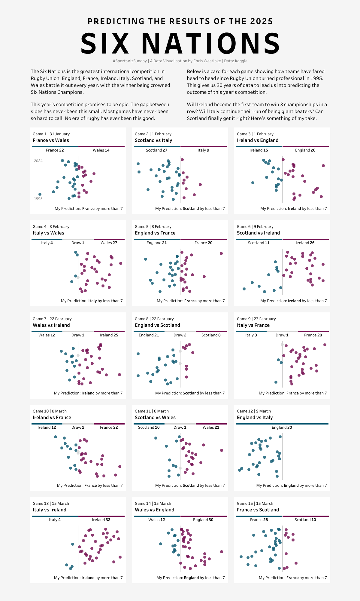
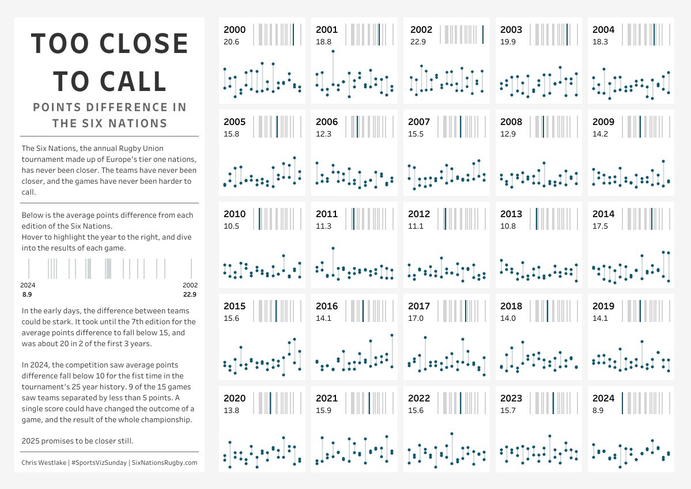
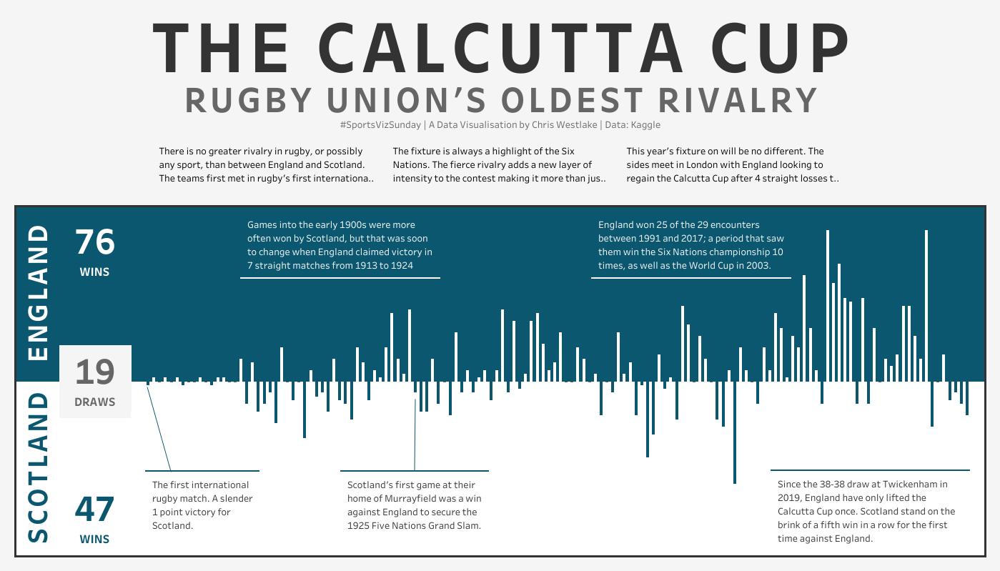

I have a strong tendency to create a lot of rugby related visualisations if left unchecked. I know that this isn’t everyone’s cup of tea. It’s unlikely to get as many likes on social media. In fact, the crossover between rugby geeks and data visualisation is regrettably rather small! I like creating things that lots of people can appreciate, and don’t want to alienate people by constantly reverting to a topic that doesn’t make any sense to them.
For the past few weeks, I’ve let my guard down entirely – and I’ve loved it. I shared at the beginning of the year how 2024 had left me feeling slightly burnt out. I did a lot throughout the year and wasn’t sure where the energy would come from to just keep going. My mind went back to my earlier days of using Tableau, and the importance of using data that you really enjoy. When learning a new skill (or seeking to improve an existing one), it is far easier if you do it through a lens that you are already invested in. For me, that lens is rugby.
The Place of Packaged Community Projects
Of course, following your passion is not the only way to practice and improve your Tableau skills. There are community projects that come with a dataset for you to use, for example Makeover Monday, Workout Wednesday, or Back 2 Viz Basics. These are all fantastic resources and certainly have their place. Sometimes you want to knock out a visualisation quickly, or to focus on a particular technique. In those cases these projects are immensely helpful.
Makeover Monday is a weekly initiative that challenges participants to create a visualisation using a provided dataset. The data usually comes from an article or other online source where the data has been visualised but could be improved.
Back 2 Viz Basics follows a similar set up but introduces a restriction on chart types as well. “Build your best bar chart with this data”. It encourages a return to the fundamentals of data visualisation. Rather than having full scope of everything in our data viz toolbox, looking at just one aspect is a really effective way to improve and home our skills.
The team at Workout Wednesday take it in turns to create a visualisation (often using Tableau’s own Superstore data) that people are challenged to recreate. The purpose is to help you learn new techniques and improve your analysis of data within Tableau. The challenges go beyond many people’s main uses of Tableau, diving into table calculations, dashboard actions, and exploring new features when a new version is released.
These projects will give you a really strong foundation with Tableau, but they can only take you so far. It took me a year and a half to publish a viz that wasn’t related to one of these projects. I learnt a lot in that time, but often struggled with using data that I wasn’t passionate about.
My Recent Passion Vizzes
As a rugby fan, the Six Nations is a time of the year that I often look forward to. This is one of the oldest tournaments in sporting history, dating back to 1883 when it was the Home Nations of England, Ireland, Scotland, and Wales. France joined the competition in 1910 making it the Five Nations, followed by the inclusion of Italy in 2000 to form the current Six Nations.
A while back I discovered this dataset on Kaggle. It contains all head to head matches between Tier 1 rugby nations (the Six Nations plus Australia, New Zealand, South Africa, and Argentina). As such, it also features every Six Nations game in its history of nearly 150 years. With this dataset in tow, I set about to visualise the data in a few different ways.
Before the first week of this year’s Championship I looked at the past 30 years worth of results between competing teams as a way to predict results for the upcoming fixtures. Using straightforward scatter plots to show the swing of results in most cases created a view of how the teams fare against each other, and who was likely to emerge victorious. The charts are basic, and the small multiple view is nothing ground breaking. It was, however, just the sort of project I needed to get my creativity flowing again.

A week later I was back with this same dataset looking at how close the teams have become. It used to be a lot easier to predict the winners of games, as evidenced here by the average points difference in each of the 25 Six Nations tournaments. In rugby competitions, a bonus point in the championship table is awarded if a team loses by 7 points or less. That used to be a relatively rare occurrence, but in 2024 9 of the 15 games were below this threshold. Another small multiple, the visualisation looks as the points difference in games and suggests that we can expect more of the same in 2025 (though France’s 43-0 win against Wales in week 1 had already skewed the results for this year!).

This week, I’m here with yet another visualisation using… you guessed it!! This week, England play Scotland in the Six Nations. This match is always full of passion and often provides one of the highlights of the Championship. My viz is a simple view of points difference across 143 rugby matches with a few annotations. I think this is simple, but very effective. It’s easy to see the trends that have occurred over time, and the pared back nature of the viz with just 2 colours makes it very easy on the eye.

This last one uses the same data as one of my first passion projects that I did almost 5 years ago. I think that’s another thing that I enjoy about having a dataset that you return to again and again. You have a way to benchmark your skills and can appreciate how your thought process evolves over time.
Your Turn!
I hope that through this you can see how you can test yourself to try new things with a simple dataset that relates to your passions. Whether it’s sports, games, or any other topic, you are sure to find data out there somewhere. ChatGPT is a fantastic resource for finding the data of your dreams. Its power for web scraping is immense, and will save you so much time! Kaggle and Data.World are also great starting points.
Reached this point and not sure what you want to visualise or where to start with it? Head over to Tableau Public and find inspiration from thousands of other Tableau users just like you. There are also a huge variety of community initiatives that support the sort of passion vizzing that I’ve been talking about here. As a starter, check out any of these that take your fancy, follow the hashtags on Social Media, and get inspired!
#GamesNightViz | #ProjectHealthViz | #DiversityInData | #DataPlusMusic
I can’t wait to see your passion projects, and the growth that will surely follow! For me, I’ll be back in a couple of weeks with another visualisation from this same dataset – I just can’t help myself!
Take care // Chris